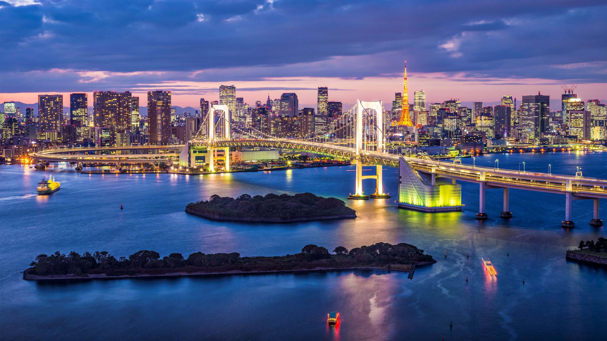
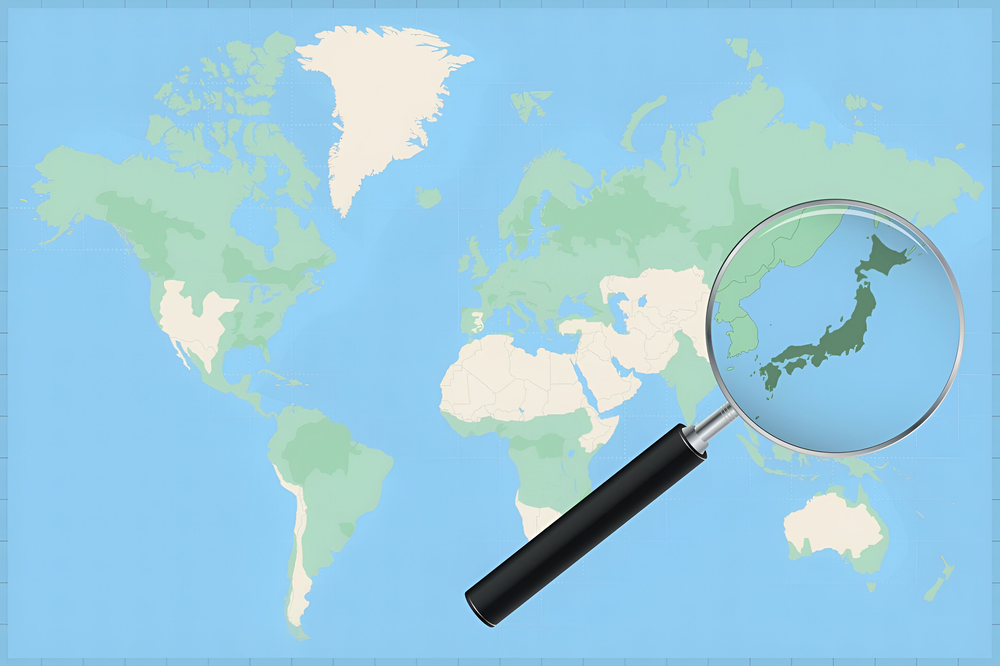
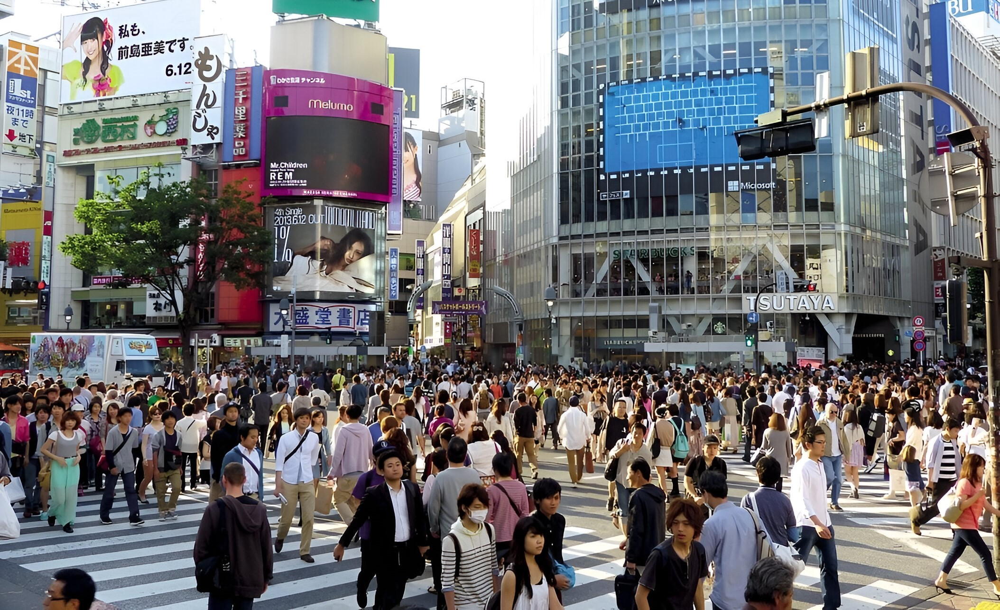
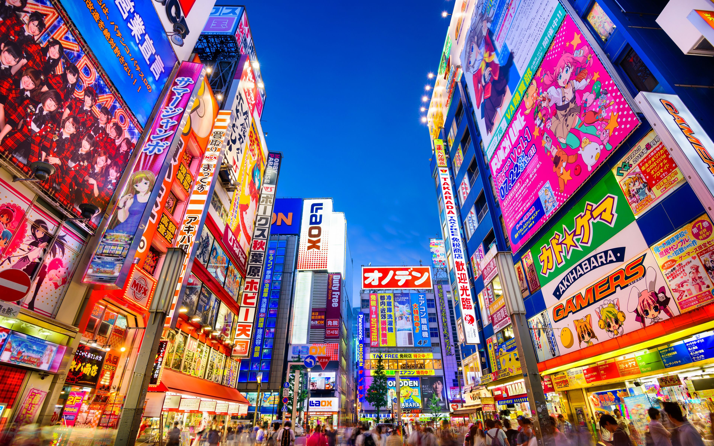
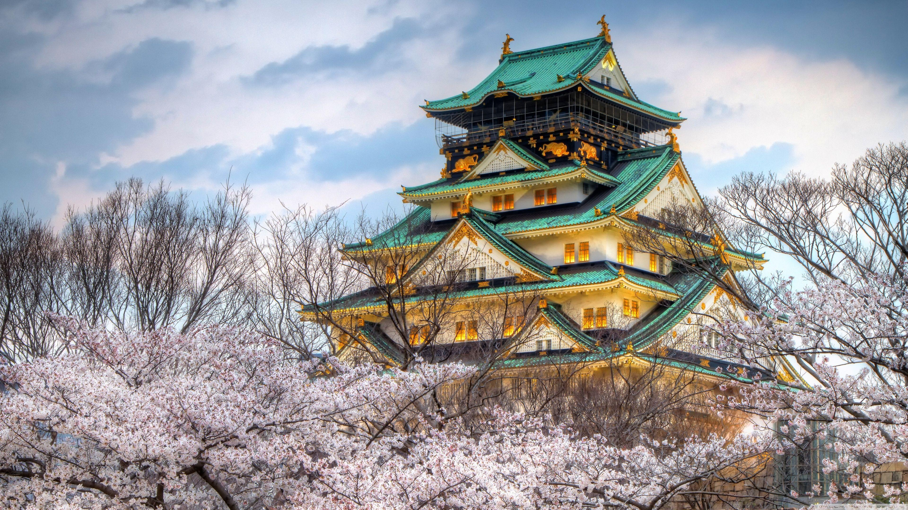

Capital: Tokyo / 東京
Ha sido la capital de Japón desde 1868.

Bandera de Japón / Hinomaru
El círculo rojo sólido representa el sol. Las razones de este diseño tienen profundas raíces religiosas y culturales.
Moneda: Yen (¥)
El Yen Japonés ha sido la moneda oficial de Japón desde 1871.

Región: Ásia
Zona Horaria de Japón: UTC+9

Población actual
125'961'515 de personas.

Tokyo / 東京
Población: 14,19 millones de habitantes.
Superficie: 2.19K km².
Tokio (anteriormente conocida como Edo) ha sido una de las ciudades más poderosas de
Asia durante siglos. En la década de 1720, ya tenía más de un millón de habitantes.
Desde entonces, ha crecido y evolucionado hasta convertirse en la metrópolis
dinámica que conocemos hoy.
Principales atractivos turísticos: Tokyo Skytree, Palacio Imperial, Monte Fuji.

Osaka / 大阪
Población: 2,75 millones de habitantes.
Superficie: 223 km².
Osaka es una ciudad relajada y llena de encanto, famosa por su gastronomía, ocio y
vida
nocturna, pero en la que también tienen cabida la historia y la cultura. Osaka está
cerca
de Tokio en tren bala, pero tiene una personalidad muy diferente a la de la capital
japonesa.
Pricipales atractivos turísticos: Castillo de Osaka, Universal Studios, Mirador Kucho Teien.
Kyoto / 京都
Población: 1,46 millones de habitantes.
Superficie: 827.83 km².
Antigua capital imperial de Japón, a menudo es considerada
la ciudad tradicional más emblemática del archipiélago, ya que cuenta con un gran
número de santuarios, templos históricos, jardines zen y monumentos inscritos en la
Lista del Patrimonio Mundial de la Unesco.
Principales atractivos turísticos: Kyoto Sagano Walk & Bamboo Forest, Castillo de Nijo, Teatro Samurai Kembu.